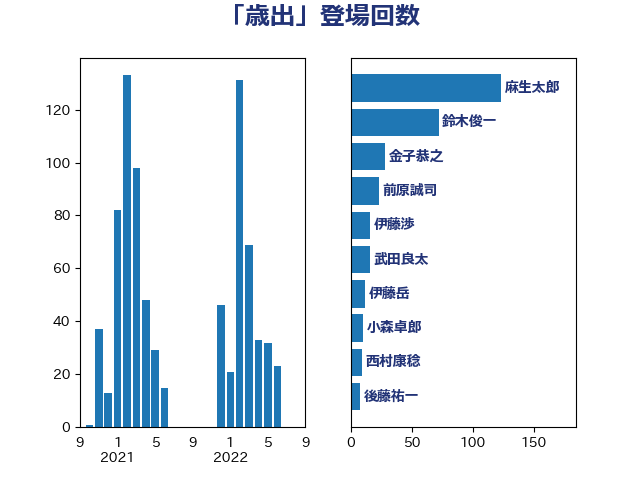

単語「歳出」

| 麻生太郎 | 自由民主党 | 123 回 |
| 鈴木俊一 | 自由民主党 | 72 回 |
| 金子恭之 | 自由民主党 | 28 回 |
| 前原誠司 | 国民民主党 | 23 回 |
| 伊藤渉 | 公明党 | 16 回 |
| 武田良太 | 自由民主党 | 16 回 |
| 伊藤岳 | 日本共産党 | 12 回 |
| 小森卓郎 | 自由民主党 | 10 回 |
| 西村康稔 | 自由民主党 | 9 回 |
| 後藤祐一 | 立憲民主党 | 8 回 |
| 田村貴昭 | 日本共産党 | 8 回 |
| 舞立昇治 | 自由民主党 | 8 回 |
| 野田佳彦 | 立憲民主党 | 8 回 |
| 玄葉光一郎 | 立憲民主党 | 7 回 |
| 菅義偉 | 自由民主党 | 7 回 |
| 本田太郎 | 自由民主党 | 6 回 |
| 柳ヶ瀬裕文 | 日本維新の会 | 6 回 |
| 櫻井周 | 立憲民主党 | 6 回 |
| 津島淳 | 自由民主党 | 6 回 |
| 浜口誠 | 国民民主党 | 6 回 |
| 海江田万里 | 立憲民主党 | 6 回 |
| 福田昭夫 | 立憲民主党 | 6 回 |
| 中川正春 | 立憲民主党 | 5 回 |
| 守島正 | 日本維新の会 | 5 回 |
| 根本匠 | 自由民主党 | 5 回 |
| 熊田裕通 | 自由民主党 | 5 回 |
| 佐藤啓 | 自由民主党 | 4 回 |
| 宮本岳志 | 日本共産党 | 4 回 |
| 岸真紀子 | 立憲民主党 | 4 回 |
| 沢田良 | 日本維新の会 | 4 回 |
| 田畑裕明 | 自由民主党 | 4 回 |
| 蓮舫 | 立憲民主党 | 4 回 |
| 金田勝年 | 自由民主党 | 4 回 |
| 馬淵澄夫 | 立憲民主党 | 4 回 |
| おおつき紅葉 | 立憲民主党 | 3 回 |
| 中西祐介 | 自由民主党 | 3 回 |
| 古賀之士 | 立憲民主党 | 3 回 |
| 大家敏志 | 自由民主党 | 3 回 |
| 小沼巧 | 立憲民主党 | 3 回 |
| 小渕優子 | 自由民主党 | 3 回 |
| 岡本三成 | 公明党 | 3 回 |
| 梶山弘志 | 自由民主党 | 3 回 |
| 片山大介 | 日本維新の会 | 3 回 |
| 西岡秀子 | 国民民主党 | 3 回 |
| 階猛 | 立憲民主党 | 3 回 |
| 高市早苗 | 自由民主党 | 3 回 |
| 小池晃 | 日本共産党 | 2 回 |
| 山本博司 | 公明党 | 2 回 |
| 山添拓 | 日本共産党 | 2 回 |
| 岩渕友 | 日本共産党 | 2 回 |
| 岸信夫 | 自由民主党 | 2 回 |
| 平沢勝栄 | 自由民主党 | 2 回 |
| 森屋隆 | 立憲民主党 | 2 回 |
| 牧山ひろえ | 立憲民主党 | 2 回 |
| 石井章 | 日本維新の会 | 2 回 |
| 石井苗子 | 日本維新の会 | 2 回 |
| 石川大我 | 立憲民主党 | 2 回 |
| 神谷裕 | 立憲民主党 | 2 回 |
| 竹内真二 | 公明党 | 2 回 |
| 船橋利実 | 自由民主党 | 2 回 |
| 若松謙維 | 公明党 | 2 回 |
| 藤田文武 | 日本維新の会 | 2 回 |
| 野村哲郎 | 自由民主党 | 2 回 |
| 鈴木庸介 | 立憲民主党 | 2 回 |
| 長浜博行 | 無所属 | 2 回 |
| 音喜多駿 | 日本維新の会 | 2 回 |
| こやり隆史 | 自由民主党 | 1 回 |
| 三浦靖 | 自由民主党 | 1 回 |
| 下村博文 | 自由民主党 | 1 回 |
| 中司宏 | 日本維新の会 | 1 回 |
| 中西健治 | 自由民主党 | 1 回 |
| 中谷元 | 自由民主党 | 1 回 |
| 今枝宗一郎 | 自由民主党 | 1 回 |
| 伊藤孝恵 | 国民民主党 | 1 回 |
| 加藤鮎子 | 自由民主党 | 1 回 |
| 務台俊介 | 自由民主党 | 1 回 |
| 勝部賢志 | 立憲民主党 | 1 回 |
| 吉川元 | 立憲民主党 | 1 回 |
| 吉川沙織 | 立憲民主党 | 1 回 |
| 和田政宗 | 自由民主党 | 1 回 |
| 堀井巌 | 自由民主党 | 1 回 |
| 小林鷹之 | 自由民主党 | 1 回 |
| 山田美樹 | 自由民主党 | 1 回 |
| 岡本あき子 | 立憲民主党 | 1 回 |
| 岩谷良平 | 日本維新の会 | 1 回 |
| 岸田文雄 | 自由民主党 | 1 回 |
| 川合孝典 | 国民民主党 | 1 回 |
| 平木大作 | 公明党 | 1 回 |
| 後藤茂之 | 自由民主党 | 1 回 |
| 末松信介 | 自由民主党 | 1 回 |
| 末松義規 | 立憲民主党 | 1 回 |
| 杉久武 | 公明党 | 1 回 |
| 杉尾秀哉 | 立憲民主党 | 1 回 |
| 東徹 | 日本維新の会 | 1 回 |
| 横山信一 | 公明党 | 1 回 |
| 橋本岳 | 自由民主党 | 1 回 |
| 江田憲司 | 立憲民主党 | 1 回 |
| 渡辺孝一 | 自由民主党 | 1 回 |
| 湯原俊二 | 立憲民主党 | 1 回 |
| 源馬謙太郎 | 立憲民主党 | 1 回 |
| 牧義夫 | 立憲民主党 | 1 回 |
| 田村憲久 | 自由民主党 | 1 回 |
| 石井正弘 | 自由民主党 | 1 回 |
| 石川香織 | 立憲民主党 | 1 回 |
| 礒崎哲史 | 国民民主党 | 1 回 |
| 秋野公造 | 公明党 | 1 回 |
| 穀田恵二 | 日本共産党 | 1 回 |
| 緑川貴士 | 立憲民主党 | 1 回 |
| 美延映夫 | 日本維新の会 | 1 回 |
| 芳賀道也 | 国民民主党 | 1 回 |
| 萩生田光一 | 自由民主党 | 1 回 |
| 落合貴之 | 立憲民主党 | 1 回 |
| 西田昌司 | 自由民主党 | 1 回 |
| 足立康史 | 日本維新の会 | 1 回 |
| 輿水恵一 | 公明党 | 1 回 |
| 酒井庸行 | 自由民主党 | 1 回 |
| 里見隆治 | 公明党 | 1 回 |
| 金村龍那 | 日本維新の会 | 1 回 |
| 鈴木宗男 | 日本維新の会 | 1 回 |
| 鈴木隼人 | 自由民主党 | 1 回 |
| 長友慎治 | 国民民主党 | 1 回 |
| 青木一彦 | 自由民主党 | 1 回 |
| 馬場伸幸 | 日本維新の会 | 1 回 |
| 高橋千鶴子 | 日本共産党 | 1 回 |
| 齋藤健 | 自由民主党 | 1 回 |